11.30.2006 17:41
Fire on R/V Legacy
Just got this in an email. Terrible, but it is good to hear that
there were no injuries.
I was informed last night by Dr. Dale Stokes of a fire and the loss of the 42' NURC Research Vessel "Legacy" off of Key Largo, Florida yesterday it was transiting to a study site. Scripps personnel onboard include DCB members, Dale Stokes and Jim Leichter. Additional team members included Northeastern University's Dr. Sal Genovese, and CSU Northridge's Mike Murray.
No one suffered any injuries.
Reports indicate that fire developed in one of the engine compartments and spread quickly to much of the boat. Personnel were evacuated to a Cuban fishing boat operating nearby and awaited USCG assistance. The boat burned to the waterline very quickly (~ 5 minutes) and subsequently sank in approximately 15' water.
The team is continuing with their instrument recovery plan using another NURC research vessel (R/V Research Diver) and diving equipment provided by the NURC Key Largo program.
11.30.2006 13:30
time trouble with google earth
Here is one feature that GeoZui just gets right, but Google Earth just
completely fails at. The ship should only show up at the most recent time!
695563-creole_queen_5views.kmz
With time set to a single point:
With a time range, bad things happen:
695563-creole_queen_5views.kmz
With time set to a single point:
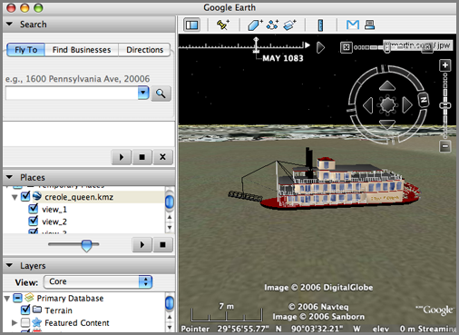
With a time range, bad things happen:
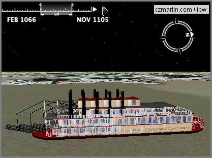
11.30.2006 13:23
URL for google kmz in google maps
Just found an example of how to use kmz files from Google Maps in a URL... the trick it to use "http://maps.google.com/?q=" and then the url.
Try this link, but make sure to zoom out!
http://maps.google.com/maps?q=http://vislab-ccom.unh.edu/~schwehr/GoogleEarth/CCOM_JHC_Logo.kmz
Try this link, but make sure to zoom out!
http://maps.google.com/maps?q=http://vislab-ccom.unh.edu/~schwehr/GoogleEarth/CCOM_JHC_Logo.kmz
11.30.2006 13:20
Very Spatial podcast
I have pretty much stopped listening to podcasts during the last 6
months. This might have something to do with me not being on the bus
every day, but I just looked back at the website for A VerySpatial Podcast and am
downloading a bunch to shove on my ipod. I still feel like I never
found a really good source of podcasts for my tastes. How about one
on geospatial tricks using python? I'd definitely subscribe to that 
11.30.2006 13:13
New ArcGIS Explorer and ArcGIS Online released
ArcGIS Explorer and ArcGIS Online Released [slashgeo]
I'm not an Arc user (I stopped using it Arc in 1995), but this is interesting to see the rapid progression. However, I did see this "Still, the major drawback of ArcGIS Explorer is its overall performance. Once you've seen how fast you can move and fly around in Google Earth, it's hard to go back to a sluggish performance like the one you're experiencing in ArcGIS Explorer."
I'm not an Arc user (I stopped using it Arc in 1995), but this is interesting to see the rapid progression. However, I did see this "Still, the major drawback of ArcGIS Explorer is its overall performance. Once you've seen how fast you can move and fly around in Google Earth, it's hard to go back to a sluggish performance like the one you're experiencing in ArcGIS Explorer."
11.30.2006 11:55
3D Cities in Google Earth
I need to make some 3D buildings in Google Earth soon from LIDAR data.
In my quest for this, here are some links. When I get it figured out,
I will probably post a tutorial. I asked Google at Siggraph this year
and the guys in the booth just stared at me blankly.
3D Cities in Google Earth by Sebastian Strzalkowski from San Diego.
And check out: Scoop! Smile for the Google 3D mapping truck
3D Cities in Google Earth by Sebastian Strzalkowski from San Diego.
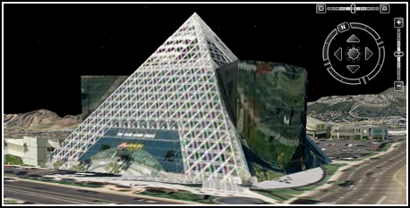
And check out: Scoop! Smile for the Google 3D mapping truck
11.30.2006 11:45
Science in MySpace and SecondLife
I have been thinking a lot lately about collaborative internet tools
for scientific communication and ways to just get more done with our
(meaning marine scientists') ship data.
I have created a MySpace account for the last cruise that I went on: myspace.com/ca0606rr which has only managed to accomplish getting invitations to view non-work safe content. What can we do with this kind of thing to make science easier (it is never going to get to be easy)? We were thinking of holding off announcing the myspace account for the cruise, but since I haven't come up with anything really crafty for it, well... here it is. If you went on the cruise, you should befriend R/V Roger Revelle (myspace handle ca0606rr). But please do not leave any more "Dear Roger" notes!
Then last night, Roland Arsenault send me a screen grab from the game Second Life. This is virtual "Science On A Sphere." I have never actually used Second Life (but have watched recorded video clips and seen screen grabs). However, it does look like this has potential. I can see building a field site in Second Life and adding all kinds of content around that.
I have created a MySpace account for the last cruise that I went on: myspace.com/ca0606rr which has only managed to accomplish getting invitations to view non-work safe content. What can we do with this kind of thing to make science easier (it is never going to get to be easy)? We were thinking of holding off announcing the myspace account for the cruise, but since I haven't come up with anything really crafty for it, well... here it is. If you went on the cruise, you should befriend R/V Roger Revelle (myspace handle ca0606rr). But please do not leave any more "Dear Roger" notes!
Then last night, Roland Arsenault send me a screen grab from the game Second Life. This is virtual "Science On A Sphere." I have never actually used Second Life (but have watched recorded video clips and seen screen grabs). However, it does look like this has potential. I can see building a field site in Second Life and adding all kinds of content around that.
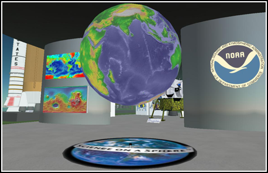
11.28.2006 21:26
3DConnexion SpaceNavigator in GoogleEarth
YouTube video
Exciting New "3D Mouse" for Google Earth - The SpaceNavigator
Exciting New "3D Mouse" for Google Earth - The SpaceNavigator
SpaceNavigator device for Google EarthI have been testing this device for a while now, and I'm really glad I can finally tell you about it! 3DConnexion, a Logitech Company (who are makers of keyboards, mice, and other input devices), has just introduced the SpaceNavigator - a three-dimensional navigation device that offers 3D designers and enthusiasts smooth, intuitive and powerful 3D navigation control. The best part is that they worked with Google to make sure the device works with both Google Earth and SketchUp (the device also already works with a number of other 3D modeling programs). All of you Google Earth fans are going to want one of these on your Christmas wish list!
11.28.2006 18:13
Apple Security Update 2006-007
It sucks that there is yet another security update to install on my
Macs, but I appreciate Apple getting fixes into the system as soon as
possible. There is so much software on a Mac system that this number
of updates actually seems low. The main frustration with my is that I
am logging data on a mac and the client is such that I can not start
it automatically on reboot.
After: Darwin 8.8.0
Security Update 2006-007 is recommended for all users and improves the security of the following components: AirPort ATS CFNetwork Finder Font Book Font Importer Installer OpenSSL PHP PPP Samba Security Framework VPN WebKit gnuzip perl For detailed information on this Update, please visit this website: http://docs.info.apple.com/article.html?artnum=61798Before: Darwin 8.8.0
After: Darwin 8.8.0
11.28.2006 11:48
USB GPS logger
TrackStick GPS Data Logger [thinkgeek.com] (link from Roland)
Containing 1MB of memory it can store up to 4000 records allowing for months of travel. When the TrackStick is not moving, memory is not used. The record interval is adjustable to anything between 1 and 15 minutes (this is used to save memory and will not extend the battery life). It's so small you can hide it for covert applications. There are no special software applications to buy and the raw data can be exported in RTF, XLS, HTML, or Google Earth KML formats.Why only 1MB of RAM and why so expensive? Other than that, this thing looks pretty cool/simple.
11.28.2006 07:13
micro-bubbles could make ships more effecient
Slippery ships float on thin air 18 February 2006 [newscientist]
... A recent report from the Maritime Research Institute Netherlands (MARIN), based in Wageningen, says that reducing the friction and hence the drag on a ship's hull could improve efficiency by up to 20 per cent. "There is currently no other technique in naval architecture that can promise such savings," it says.
But how do you make a ship slippery? So far researchers have tried using tiny bubbles, slippery polymers and trapped sheets of air, and it seems that which method is best depends on what you want to achieve. If you simply wish to haul more cargo at a sedate 14 knots or so, in an environmentally responsible way using less fuel, then creating a carpet of microbubbles beneath a flat-bottomed hull may be the answer. On the other hand, the best option for a cargo ship expected to knife through the sea at more than 50 knots could be to cover the metal of the hull with a wall of air, effectively creating a boat in a bubble. ...
11.26.2006 19:13
Dover Christmas Parade pictures
These pictures should give a pretty fitting impression of the Dover.
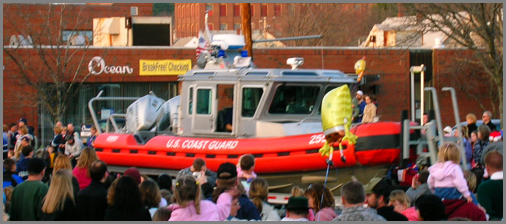
11.26.2006 13:32
MB-System 5.1.0 released
Looks like I've got some work to do... MB-System 5.1.0 and GMT 4.1.4 for fink.
A new release (5.1.0) of the MB-System software package is now available via anonymous ftp.
MB-System is a software package for Unix computing environments consisting of programs which manipulate, process, list, or display swath bathymetry and sidescan data. MB-System is being developed at the Monterey Bay Aquarium Research Institute (MBARI) and the Lamont-Doherty Earth Observatory (L-DEO) of Columbia University with support from the National Science Foundation and the Packard Foundation.
The 5.1.0 release is now the current version of MB-system, and replaces all previous releases. We recommend that all MB-System users upgrade to 5.1.0. In particular, we will no longer provide support for problems encountered while using MB-System releases prior to 5.1.0.
Also, as many of you no doubt have noted, the GMT team has released several incremental updates to their package since MB-System 5.0.9 was released last February. The current version of GMT is 4.1.4. MB-System release 5.1.0 requires installation of GMT 4.1.4. We will not provide support for problems associated with the use of prior GMT releases.
If you identify a problem with this release, please provide us with a description of the problem, particulars of the installation (e.g. operating system and compile flags), and a data sample associated with the problem. We also ask that you post this information to the MB-System Discussion List rather than email us directly. The discussion list can be accessed at: http://listserver.shore.mbari.org/read/?forum=mbsystem" target=_blank >http://listserver.shore.mbari.org/read/?forum=mbsystem
We are continuing to actively develop MB-System, and so occasionally updates to the MB-System distribution will appear in the MB-System ftp archive: ftp://ftp.ldeo.columbia.edu/MB-System and be announced on the MB-System web page: http://www.ldeo.columbia.edu/MB-System Only major releases will be announced by email.
To obtain the compressed tarfile of the directory structure containing the source code, do the following: % ftp ftp.ldgo.columbia.edu Name: anonymous Password: your_email_address ftp> cd pub/swath_data ftp> binary ftp> get MB-System.5.1.0.tar.gz
...
Cheers,
Dave Caress and Dale Chayes
11.26.2006 13:08
Dover xmas parade
Looks like the Dover Christmas parade is getting setup right outside
of my house. Kickoff is at 3:15 this afternoon.
11.26.2006 13:06
Blogmap - Fargo
I should really make a tool to do the equivalent of givisit.com in google earth from my
web logs. Should not be that hard and then there would not be the
last 10 restriction. That would be a nice addition to webalizer.
Always cool to have a hit from Fargo.
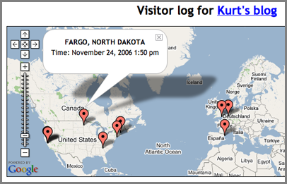
Always cool to have a hit from Fargo.
11.25.2006 13:18
Santa Barbara cruise photos
I have put up some of the photos from the cruise this month to the
Santa Barbara Basin. Photos are sorted by who took the picture. If you
have photos that I can put up, please pass them along.
ca0606rr photos/
ca0606rr photos/
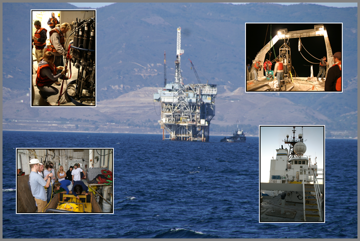
11.25.2006 11:00
Olex - sharing world soundings
Olex [olex.no] is an
interesting Marine navigation software system. Your echo sounder
measurements are uploaded to the Olex servers and become a part of a
global network of soundings. Question is, what do they do about sound
speed? Most vessels are not deploying XBT's or any other sound speed
device.
Dapple looks interesting (even if it looks to be Windows only) as a Google Earth like program that has access to DAP and WMS servers for viewing many more data sources than Google Earth. Kind of like OSSIM Planet.
Thanks to Dave Monahan for the links.
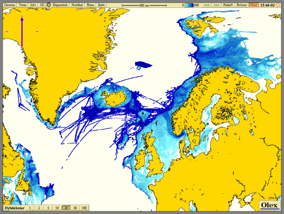
Dapple looks interesting (even if it looks to be Windows only) as a Google Earth like program that has access to DAP and WMS servers for viewing many more data sources than Google Earth. Kind of like OSSIM Planet.
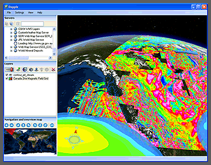
Thanks to Dave Monahan for the links.
11.25.2006 09:47
Google Earth multibeam coverage map
I just found this screen shot from the cruise last week. I didn't do
enough to qualify what this is supposed to be. The key to remember is
that these are raw (not cleaned) coverage maps to show generally what
is in each raw log file from the multibeam. If I were trying to show
the seafloor morphology, I would have first cleaned the data and then
done a shaded relief map so that it was possible to see small high
frequency features like the crack. The number labels for the
placemarks are the count in front of the filename. However there are
4 per day of these, so I added a "_?" where I increment the ?.
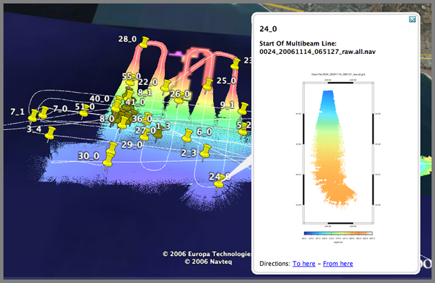
11.25.2006 09:37
Climate chaos? Don't believe it
Not that this is NOT a peer reviewed Journal article. Is there a
rebuttal to this article? My specialty is not climatology, but from
what I have seen of the raw data shows that climate is a dangerous
thing to play with. Anyone with a good counter reference, please send
it along. I am all about airing both sides of arguments.
Climate choas? Don't believe it
Climate choas? Don't believe it
By Christopher Monckton, Sunday Telegraph Last Updated: 12:14am GMT 05/11/2006
The Stern report last week predicted dire economic and social effects of unchecked global warming. In what many will see as a highly controversial polemic, Christopher Monckton disputes the 'facts' of this impending apocalypse and accuses the UN and its scientists of distorting the truth Biblical droughts, floods, plagues and extinctions?
Last week, Gordon Brown and his chief economist both said global warming was the worst "market failure" ever. That loaded soundbite suggests that the "climate-change" scare is less about saving the planet than, in Jacques Chirac's chilling phrase, "creating world government". This week and next, I'll reveal how politicians, scientists and bureaucrats contrived a threat of Biblical floods, droughts, plagues, and extinctions worthier of St John the Divine than of science.
11.24.2006 11:42
SDSU Google Earth
I just ran into SDSU's Google Earth page and discovered a number of
things that I had been thinking about creating myself. The only
bummer is that they feel like a blind dump from an Arc coverage.
Notice in the San Diego map that it is really hard to figure out which
slide is which when the Arrows have no name and the outcrop photos are
not placemarks. Still is great stuff, especially for those teaching
this in Earth Science classes.
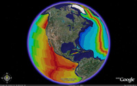
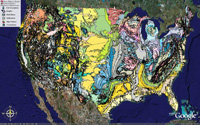
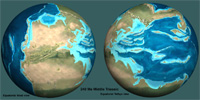
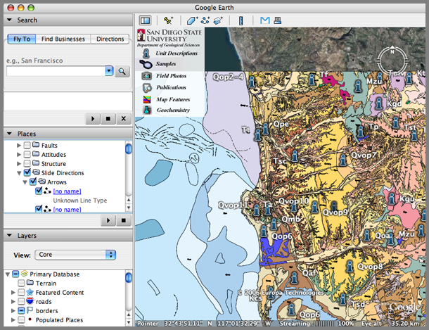
11.24.2006 11:04
Why is google Earth doing this to me?
Sometimes I just have to wonder. What checkbox did I accidentally select? Somehow I got all of the alternate placenames turned on.
And why did X11 stop listening the keyboard on my 4xG5? Everything runs fine, but focus never goes to the windows. Maybe this is a mouse problem?
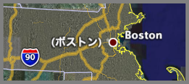
And why did X11 stop listening the keyboard on my 4xG5? Everything runs fine, but focus never goes to the windows. Maybe this is a mouse problem?
11.24.2006 10:49
Google Earth georeferenced images to Google Maps
Yesterday, I added Placemarks from Google Earth into Google Maps. I
noticed that Google Maps can't handle polygons, but here is an example
of using a georeferenced image. This still begs the question, "why
use Google Maps if you have Google Earth?
This example uses the CCOM/JHC Logo that I have placed on the ocean floor just off the NH coastline. CCOM_JHC_Logo.kmz
I'll start by adding the kmz to my instance of Google Earth just to show what we are working with.
The results look like this:
Now place this URL in Google Maps and you will see the logo appear: http://vislab-ccom.unh.edu/~schwehr/GoogleEarth/CCOM_JHC_Logo.kmz
This example uses the CCOM/JHC Logo that I have placed on the ocean floor just off the NH coastline. CCOM_JHC_Logo.kmz
I'll start by adding the kmz to my instance of Google Earth just to show what we are working with.
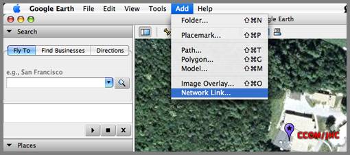
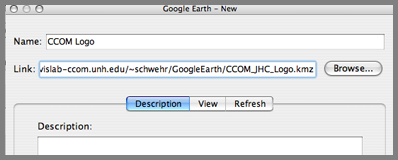
The results look like this:
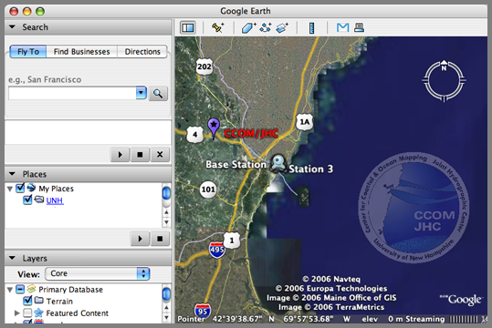
Now place this URL in Google Maps and you will see the logo appear: http://vislab-ccom.unh.edu/~schwehr/GoogleEarth/CCOM_JHC_Logo.kmz
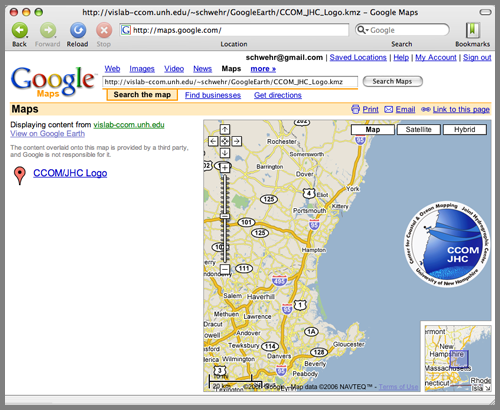
11.23.2006 11:44
Google Earth crossed with Google Maps
Google Maps now has the ability to read some parts of Google Earth
kml/kmz files. It does not seem to handle polygons, but it does
handle placemarks. I added the CCOM/JHC offices to Google Earth.
http://vislab-ccom.unh.edu/~schwehr/GoogleEarth/CCOM.kmz
Then I pasted the above URL into the Google Maps "Search Maps" field and got this:
http://vislab-ccom.unh.edu/~schwehr/GoogleEarth/CCOM.kmz
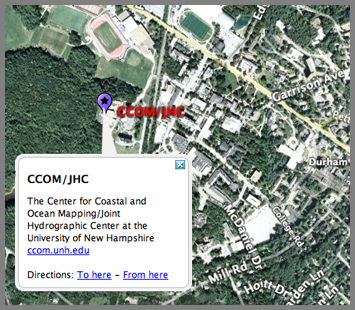
Then I pasted the above URL into the Google Maps "Search Maps" field and got this:
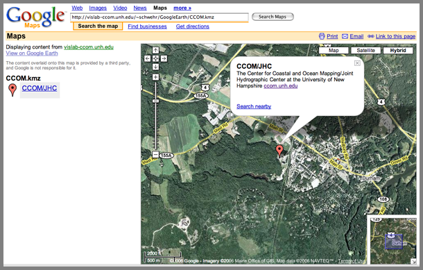
11.23.2006 11:18
ASSIST - mechanical sketchpad
This is my first try at embedding a youtube video in my blog. This
one got passed along by Roi. Of course, I need a permanent image in
case this video goes the way of the dodo. How long can we expect
YouTube to keep videos?
http://www.youtube.com/watch?v=_sWxhaYx7UY
http://www.youtube.com/watch?v=_sWxhaYx7UY
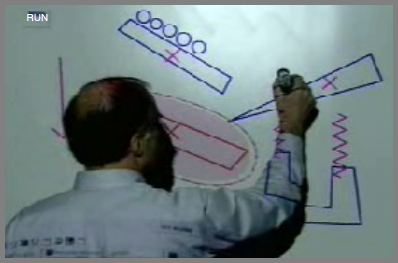
11.23.2006 08:46
arc2earth
arc2earth is a commercial product to convert arc data to Google Earth kmz files.
11.23.2006 08:44
Where 2.0 Call For Papers (CFP)
Where 2.0 2007's Call For Participation is now open.
Location technology is booming across the Web and into people's homes. Since Where 2.0 2006, we've seen Microsoft release an amazing computer-generated, 3-D mapping tool complete with realtime traffic and an API, Platial create a distributed mapping platform built on top of Google's mapping platform, Sony release two consumer GPSs, and Open Street Map cinch a commercial deal. Google has added time phases to Google Earth and expanded Google Transit. Yahoo! has launched Flickr maps which now holds over four million geotagged photos. There are even hints that Apple is getting into the game with references to Google Maps being found in iPhoto. In the open source and data worlds, Wikimapia created a Google Earth layer and GeoRSS reached 1.0. In the meantime, Amazon has gotten out of the game by dropping it's innovative street-side maps.
And this is just the beginning--there is so much further for us to go. Phones know where we are, but can't tell us or someone who is browsing the phone's webserver. Photos can only be geotagged with expensive add-ons or by painstakingly adding them to a map. We still don't have the ability to correct that home or business showing up two blocks away from its actual location on most mapping services.
Where 2.0 happens May 29-30, 2007 at the Fairmont Hotel in San Jose, California, U.S.
11.19.2006 22:38
Core collection datasheets - not the best
While on the cruise last week, I created a core collection sheet since
I didn't have any official ones with me. This is not the best and is
missing a number of important items, but hopefully it will prompt me
to take an NSF/OSU blank coring sheet with me next time. I only have
a paper version online, but it will not take too long to make it
electronic. CoreSheetBlank.pdf
11.19.2006 17:49
Silly nanoblogger bug
I just noticed that nanoblogger write blog entry files with the local
date time. That's fine if I was not travelling, but right now, I just
passed over the Rockies. My laptop thinks it is in PST, but I am in
mountain time and I am heading for EST. Best always to work in GMT,
no? Time to switch my powerbook back to EST.
ls -l 2006-11-19T17_23_47.txt -rw-r--r-- 1 schwehr staff 10580 Nov 19 17:44 2006-11-19T17_23_47.txt
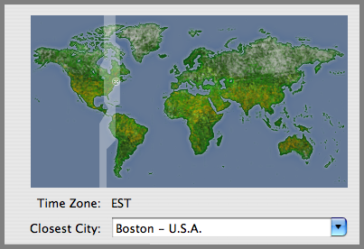
11.19.2006 17:23
using gmt from c++ code
(NOTE: This was using GMT 4.1.3)
While on the last cruise, I tried to use gmt from within some c++ code. I was in a hurry, so when it did not work, I reverted to straight C. Now that I have a few minutes, I went back and took a look at what was going on. I will submit this to the gmt guys when I get a chance. First, here is the error that I got:
While on the last cruise, I tried to use gmt from within some c++ code. I was in a hurry, so when it did not work, I reverted to straight C. Now that I have a few minutes, I went back and took a look at what was going on. I will submit this to the gmt guys when I get a chance. First, here is the error that I got:
g++ testgmt.C -I/Users/schwehr/gmt/include -L/Users/schwehr/gmt/lib \
-lgmt -I/sw/include -lnetcdf -L/sw/lib \
-o testgmt
gmt/include/gmt_io.h:237: error: expected ',' or '...' before 'template'
gmt/include/gmt_io.h:238: error: expected ',' or '...' before 'template'
gmt/include/gmt_io.h:239: error: expected ',' or '...' before 'template'
gmt/include/gmt_io.h:240: error: expected ',' or '...' before 'template'
Here is the offending code:
EXTERN_MSC void GMT_date_C_format (char *template, struct GMT_DATE_IO *S, int mode); EXTERN_MSC void GMT_clock_C_format (char *template, struct GMT_CLOCK_IO *S, int mode); EXTERN_MSC void GMT_geo_C_format (char *template, struct GMT_GEO_IO *S); EXTERN_MSC void GMT_plot_C_format (char *template, struct GMT_GEO_IO *S);The first problem is that template is a reserved word in C++. Changing template to "Template" did the trick, but left me with a link error.
g++ testgmt.C -I/Users/schwehr/gmt/include -L/Users/schwehr/gmt/lib \
-lgmt -I/sw/include -lnetcdf -L/sw/lib -o testgmt
/usr/bin/ld: Undefined symbols:
GMT_grd_init(GRD_HEADER*, int, char**, int)
GMT_read_grd_info(char*, GRD_HEADER*)
GMT_begin(int, char**)
collect2: ld returned 1 exit status
I've run into this one enough times in my life. The trick is to tell
the compiler that the header is C so that it does not apply name
mangling. C++ changes the function name based on the arguments so
that it can use the arguments to distinguish different functions using
the same name but different types. Here is an example of how gdbm
gets around this:
/* GDBM C++ support */
#if defined(__cplusplus) || defined(c_plusplus)
extern "C" {
#endif
// The normal header goes here
#if defined(__cplusplus) || defined(c_plusplus)
}
#endif
If you can't alter the include file, the support for C code can be
done around the include within the C++ file. My final work example
looks like this:
/*
gxx testgmt2.C -I/Users/schwehr/gmt/include -L/Users/schwehr/gmt/lib \
-lgmt -I/sw/include -lnetcdf -L/sw/lib -o testgmt2
*/
#include <cassert>
#include <iostream>
using namespace std;
extern "C" {
#include <gmt.h>
}
int main (int argc, char *argv[]) {
struct GRD_HEADER hdr;
char *filename = argv[1];
argc=GMT_begin(argc,argv); // Sets crazy globals
GMT_grd_init (&hdr, argc, argv, false); // Initialize grd header structure
const int r = access(filename,R_OK);
if (0!=r) {
cerr << "ERROR: Unable to read file: " << filename << "\n"
<< " r == " << r << "\n";
return false;
}
GMT_read_grd_info (filename,&hdr);
cout << hdr.y_max << " " << hdr.x_max << "\n"
<< hdr.y_min << hdr.x_min << "\n"
<< hdr.z_max << hdr.z_min << "\n"
<< "format: " << hdr.type << "\n";
return EXIT_SUCCESS;
}
Running this test program is a lot like grdinfo.
./testgmt2 0002_20061112_173100_raw.all.grd testgmt2: WARNING: The step size of coordinate (Longitude) in grid 0002_20061112_173100_raw.all.grd is not constant. testgmt2: WARNING: GMT will use a constant step size of 0.000298538; the original ranges from 0.000297546 to 0.000305176. 34.2195 -119.345 34.0943-119.595 221.855151.599 format: 18Now I am happily able to use gmt from within C++, which is good because I need to write a whole bunch of code that uses portions of gmt.
11.19.2006 15:05
Sharing geologic features
Google Earth has a polygon feature that when made transparent is a
great way to highlight features. I know... people already do this in
the google earth community, but this is new to me. Things to do in
the Las Vegas airport.
LasVegasGeology.kmz
LasVegasGeology.kmz
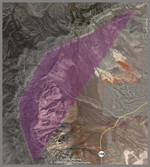
11.18.2006 11:20
Jeff Riffell's page
Kiley just let me know that Jeff Riffle now has a web page up for his
research. Jeff Riffel -
chemosensory ecology and physiology
11.16.2006 10:54
Google Earth push pins for multibeam
The first step is to produce push pins/thumb tacks for each of the
lines. Probably the best place for each line would be at the median
ping, but it was simpler to code the beginning of the line. The first
step is build the default grid plot using gmt/mbsystem. This is using
the em120 on the R/V Revelle (mbsystem type 56).
Now, use a small python script to take each nav file to place the start of each line with an image:
The python script mbnavStart2kml.py (not pretty code):
for file in *_raw.all; do
mbnavlist -I$file > $file.nav
mbm_grid -F56 -I $file
./${file}_mbgrid.cmd
mbm_grdplot -I${file}.grd
./${file}.grd.cmd
convert -resize 400x400 ${file}.grd.ps ${file}.png
done
Here is what the above produces: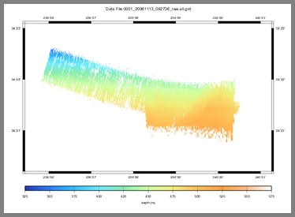
Now, use a small python script to take each nav file to place the start of each line with an image:
echo "Building Google Earth files"
mbnavStart2kml.py *.nav > start.kml
The start.kml file looks like this, but with many more entries:
<?xml version="1.0" encoding="UTF-8"?>
<!-- Revision: 2449 -->
<!-- Software date: 2006-1 -->
<!-- Prototype Google Earth visualization by Kurt Schwehr -->
<!-- We are using timeSpans which is only in 2.1 and newer -->
<kml xmlns="http://earth.google.com/kml/2.1">
<Document>
<Folder>
<name>Ship Track Segments (MBES)</name>
<description>Ship track from multibeam file</description>
<Placemark>
<name>1_0</name>
<description>
<![CDATA[<b>Start Of Multibeam Line: 0001_20061111_164959_raw.all.nav</b></br></br
> <img src="0001_20061111_164959_raw.all.png"]]>
</description>
<Point>
<coordinates> -117.278221,32.653537, 10</coordinates>
</Point>
</Placemark>
</Folder>
</Document>
</kml>
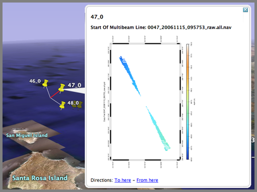
The python script mbnavStart2kml.py (not pretty code):
#!/usr/bin/env python __version__ = '$Revision: 1.2 $'.split()[1] __date__ = '$Date: 2006/11/16 18:43:09 $'.split()[1] __author__ = 'Kurt Schwehr'
__doc__=''' Create google earth files from mbsystem default nav files. Places a popup image at each thumb tack.
@requires: U{Python<http://python.org/>} >= 2.4 @requires: U{epydoc<http://epydoc.sourceforge.net/>} >= 3.0alpha3 @author: U{'''+__author__+'''<http://xenon.stanford.edu/~schwehr/>} FIX: replace with your name/url @version: ''' + __version__ +''' @copyright: 2006 @var __date__: Date of last svn commit @undocumented: __version__ __author__ __doc__ myparser @since: 2006-Sep-26 FIX: replace with the file creation date @status: under development @organization: U{CCOM<http://ccom.unh.edu/>} - FIX: if not CCOM change the name and link @license: GPL @todo: Allow linking to sd and grd files. @todo: Make this much nicer code! ''' import sys def noLeadZeros(aStr): while aStr[0]=='0': aStr=aStr[1:] return aStr ###################################################################### # Code that runs when this is this file is executed directly ###################################################################### if __name__ == '__main__': from optparse import OptionParser myparser = OptionParser(usage="%prog [options]", version="%prog "+__version__+' ('+__date__+')') (options,args) = myparser.parse_args() print '''<?xml version="1.0" encoding="UTF-8"?> <!-- Revision: 2449 --> <!-- Software date: 2006-1 --> <!-- Prototype Google Earth visualization by Kurt Schwehr --> <!-- We are using timeSpans which is only in 2.1 and newer --> <kml xmlns="http://earth.google.com/kml/2.1"> <Document> <Folder> <name>Ship Track Segments (MBES)</name> <description>Ship track from multibeam file</description> ''' oldLabel=None count = -1 for filename in args: start=None end=None line = file(filename).readline() fields=line.split() lon = fields[7] lat = fields[8] label = noLeadZeros(filename.split('_')[0]) if oldLabel != label: oldLabel=label count = -1 count += 1 label += '_' + str(count) print ''' <Placemark> <name>'''+label+'''</name> <description> <![CDATA[<b>Start Of Multibeam Line: '''+filename+'''</b></br></br> <img src="'''+filename[:-4]+'''.png"]]> </description> <Point> <coordinates> '''+lon+','+lat+''', 10</coordinates> </Point> </Placemark> ''' print ''' </Folder> </Document> </kml> '''
11.16.2006 09:53
GoogleEarth multibeam
Here is an image of my first try at automatically converting multibeam
data into Google Earth using gmt/mbsystem. This is meant as a
proofing tool to see what things look like before they have been
cleaned up. Scripts and code to follow.
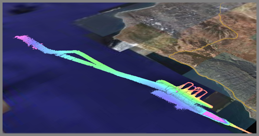
11.13.2006 15:34
Processing Multibeam with MB-System (Notes from the Revelle)
This is the beginning of a couple entries on processing multi-beam
sonar on the R/V Revelle (and also my first blog post while at sea.)
NOTE: This is not the complete way to process the data. I am missing several steps and we are also working on getting Caris installed on the ship.
The first task is to find the sonar and XBT (eXpendable Bathy Thermograph) data on the ships computers. Our cruise is CA0606RR, so the EM120 multibeam system has its data stored in /SCG.PROC/CRUISE.DATA/EM120/raw/CA0606RR. I used scp to bring the data to my laptop. The -r is for recursive and the -p preserves timestamps.
I started out wanting to see how the data looked at 30m (which is what the MBARI em300 survey used). I then tried 15m to see how small the grid cell size can be. I tried producing a grid file, but dmagic (from the Fledermaus package) was unable to read them. Instead I used an Arc/ASCII format (which is specified by -G4). Here is my command that I used.
NOTE: This is not the complete way to process the data. I am missing several steps and we are also working on getting Caris installed on the ship.
The first task is to find the sonar and XBT (eXpendable Bathy Thermograph) data on the ships computers. Our cruise is CA0606RR, so the EM120 multibeam system has its data stored in /SCG.PROC/CRUISE.DATA/EM120/raw/CA0606RR. I used scp to bring the data to my laptop. The -r is for recursive and the -p preserves timestamps.
scp -p -r revelle:/SCG.PROC/CRUISE.DATA/EM120/raw/CA0606RR ~/Desktop/em120rawI had to figure out which multibeam format to us in mbsystem. The file naming convention on the Revelle does say what number the format is. A quick look at "man mbio" shows this:
MBIO Data Format ID: 56
Format name: MBF_EM300RAW
Informal Description: Simrad current multibeam
vendor format
Attributes: Simrad EM120, EM300, EM1002,
EM3000, bathymetry, amplitude,
and sidescan, up to 254 beams,
variable pixels, ascii + binary,
Simrad.
MBIO Data Format ID: 57
Format name: MBF_EM300MBA
Informal Description: Simrad multibeam processing format
Attributes: Old and new Simrad multibeams,
EM12S, EM12D, EM121, EM120,
EM300, EM100, EM1000, EM950,
EM1002, EM3000, bathymetry,
amplitude, and sidescan,
up to 254 beams, variable pixels,
ascii + binary, MBARI.
Based on that, I think the data is in format 56. Inside that new
directory is where I will work. The first task is to create the list
of files that will be processed into one grid.
ls *_raw.all | awk '{print $1, 56}' > datalist
Then datalist will look something like this:
0001_20061111_164959_raw.all 56 0001_20061111_180424_raw.all 56 0001_20061112_172712_raw.all 56 0001_20061113_082736_raw.all 56 0002_20061111_165145_raw.all 56 0002_20061111_234540_raw.all 56
I started out wanting to see how the data looked at 30m (which is what the MBARI em300 survey used). I then tried 15m to see how small the grid cell size can be. I tried producing a grid file, but dmagic (from the Fledermaus package) was unable to read them. Instead I used an Arc/ASCII format (which is specified by -G4). Here is my command that I used.
mbgrid -Idatalist -R-120.5/-119.5/34/34.5 -Oall_to_20061113 -A2 -N -E30/30/meters -G4 cp all_to_20061113.asc ~/Desktop/Now open dmagic and import a gridded surface. After creating a sd file for the area, I did a quick transect/profile line across the crack.
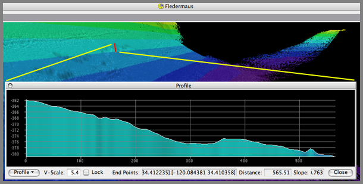
11.10.2006 11:26
Fink svn 1.2 to 1.4 upgrade troubles
Time to write a blog entry while I wait for 6 gigs of svn stuff to
come across the internet from the East Coast to West coast. 1 MB/s
seems slow when you have 6 GB to go.
I finally got svn to upgrade from 1.2.3 to 1.4.2. I kept getting strange conflicts. The trick was to complete remove all svn 1.2.3 and any svn doc packages. Then I installed things one by one with the svn-client-ssl last. Now I have svn in my path with ssl and it works.
I finally got svn to upgrade from 1.2.3 to 1.4.2. I kept getting strange conflicts. The trick was to complete remove all svn 1.2.3 and any svn doc packages. Then I installed things one by one with the svn-client-ssl last. Now I have svn in my path with ssl and it works.
fink list svn | egrep -v "admin|swig|cpp|web|mirror|java|cvs|kde|apache|rapid|simple"
i svn 1.4.2-10 Subversion - svnserve, tools
i svn-client 1.4.2-10 Subversion - Client
svn-client-ssl 1.4.2-10 Dummy upgrade package for svn-client
i svn-dev 1.4.2-10 Subversion - Development headers and libs
svn-doc 1.4.2-10 Subversion - Documentation
i svn-shlibs 1.4.2-10 Subversion - Shared libraries
i svn-ssl 1.4.2-10 Dummy upgrade package for svn
i svn-ssl-dev 1.4.2-10 Dummy upgrade package for svn-dev
svn-ssl-doc 1.4.2-10 Dummy upgrade package for svn-doc
i svn-ssl-shlibs 1.4.2-10 Dummy upgrade package for svn-shlibs
11.05.2006 12:34
Global warming in NH
Global Warming in New Hampshire [Union of Concerned Scientists]
The people of New Hampshire derive their sense of place from the Granite State's unique landscapes and the rhythms of its climate, from its brilliant fall foliage to deep winter snows in the White Mountains, to summer fun in the Lakes Region.
However, changes in New Hampshire's climate brought about by global warming are beginning to affect New Hampshire's way of life-from tourism to economic opportunity and health care costs.
To help ensure our children inherit a state that supports a high quality of life and rich opportunities, it is important to understand the causes and direction of climate trends, as well as the practical and responsible steps New Hamphire can take in the next few years to help avoid many of the unfavorable consequences of global warming.
11.04.2006 16:05
using xmllint to help with writing kml by hand
I have lately been having good talks with people about adding kml
authoring capabilities into the tools that I use, but for now I am
writing kml by hand (I am too lazy to fire up oxygen). If google
earth complains about unbalanced tags, here is a quick way to find out
what went wrong. xmllint is a simple tool that comes with libxml2.
Another nice tool is xmlstarlet, which can do quite a bit from the command line.
# xmllint schwehr-resume.kml
schwehr-resume.kml:241: parser error : Opening and ending tag mismatch: coodinates line 241 and coordinates
-118.49353055555555 34.007869444444445
^
It shows that I mispelled coordinates.
Another nice tool is xmlstarlet, which can do quite a bit from the command line.
11.03.2006 20:23
g-cubed publication is out!
Ok, now this was a nice email to see in my mailbox this evening!
Congratulations! Your article, "Detecting compaction disequilibrium with anisotropy of magnetic susceptibility", was published today in Geochemistry Geophysics Geosystems.And the Abstract:
The complete citation is
Schwehr, K., L. Tauxe, N. Driscoll, and H. Lee (2006), Detecting compaction disequilibrium with anisotropy of magnetic susceptibility, Geochem. Geophys. Geosyst., 7, Q11002, doi:10.1029/2006GC001378.
MAKE IT COUNT: Use this complete AGU citation wherever you publish to increase the likelihood that citations to your article are counted.
We recognize that reference styles vary by journal, but certain elements, most notably, the citation number ("Q11002" above), must be included for a citation to be counted by the Institute of Scientific Information's Web of Science
In clay-rich sediment, microstructures and macrostructures influence how sediments deform when under stress. When lithology is fairly constant, anisotropy of magnetic susceptibility (AMS) can be a simple technique for measuring the relative consolidation state of sediment, which reflects the sediment burial history. AMS can reveal areas of high water content and apparent overconsolidation associated with unconformities where sediment overburden has been removed. Many other methods for testing consolidation and water content are destructive and invasive, whereas AMS provides a nondestructive means to focus on areas for additional geotechnical study. In zones where the magnetic minerals are undergoing diagenesis, AMS should not be used for detecting compaction state. By utilizing AMS in the Santa Barbara Basin, we were able to identify one clear unconformity and eight zones of high water content in three cores. With the addition of susceptibility, anhysteretic remanent magnetization, and isothermal remanent magnetization rock magnetic techniques, we excluded 3 out of 11 zones from being compaction disequilibria. The AMS signals for these three zones are the result of diagenesis, coring deformation, and burrows. In addition, using AMS eigenvectors, we are able to accurately show the direction of maximum compression for the accumulation zone of the Gaviota Slide.
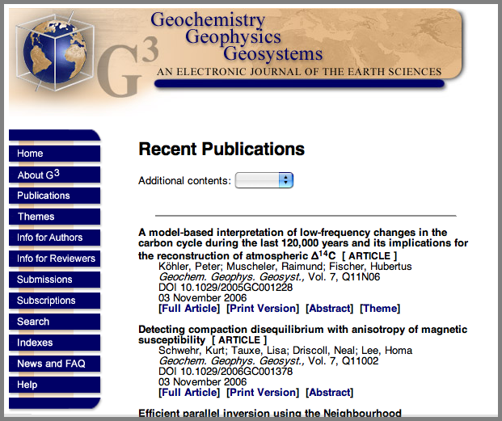
11.03.2006 19:56
ArcticNet 2005-2006 report online
ArcticNet
has its 2005-2006 report out. The photos are very nice.
ArcticNet is a Network of Centres of Excellence of Canada that brings together scientists and managers in the natural, human health and social sciences with their partners in Inuit organizations, northern communities, federal and provincial agencies and the private sector to study the impacts of climate change in the coastal Canadian Arctic. Over 100 ArcticNet researchers from 27 Canadian universities and 5 Federal departments collaborate with research teams in the USA, Japan, Denmark, Sweden, Norway, Poland, the United Kingdom, Spain, Russia, Greenland and France.
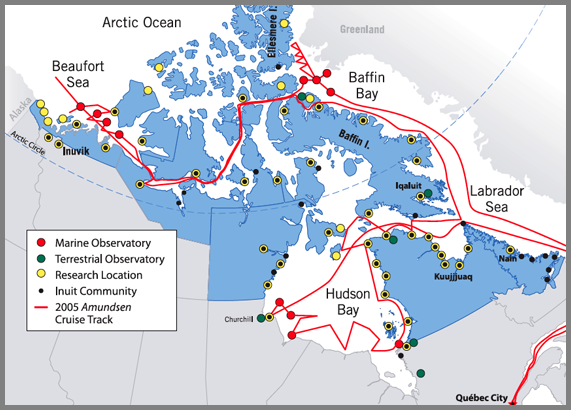
11.03.2006 09:05
Hints for Teaching and Learning (these also apply to those studying marine sciences)
Teaching Design
the RIGHT way [ambidextrousmag.org] points to two good articles.
These are meant for design students and teachers, but 99% of this
stuff applies to people studying marine sciences.
Those Who Can, Teach. 1000 words of advice for design teachers. By Allan Chochinov
All You Ever Needed to Know You Learned in... 1000 words for design students By Allan Chochinov
Those Who Can, Teach. 1000 words of advice for design teachers. By Allan Chochinov
All You Ever Needed to Know You Learned in... 1000 words for design students By Allan Chochinov
11.03.2006 08:54
Intellipedia system - national intelligence wiki system
What A Wiki Really Means for the Intelligence Community [defensetech.org]
wikipedia on intellipedia
U.S. Adds Wiki to Spy Arsenal [wired.com]
So, to the science communities out there, "Where are our wikis for different science types of science?" For example, if I google for hydrography wiki, I only get entries in some of the big wiki engines about Hydrdrography, not a hydrography wiki where I could really dig into the topic.
[wikipedia image]
wikipedia on intellipedia
U.S. Adds Wiki to Spy Arsenal [wired.com]
So, to the science communities out there, "Where are our wikis for different science types of science?" For example, if I google for hydrography wiki, I only get entries in some of the big wiki engines about Hydrdrography, not a hydrography wiki where I could really dig into the topic.
[wikipedia image]
11.02.2006 15:38
Shallow Water Survey in google earth
I am not really happy with this, but it is time to just get it out
there. There is an aliasing problem that looks nasty, but the
multibeam data is in the right place.
ShallowWaterSurvey2001-draft.kmz
ShallowWaterSurvey2001-draft.kmz
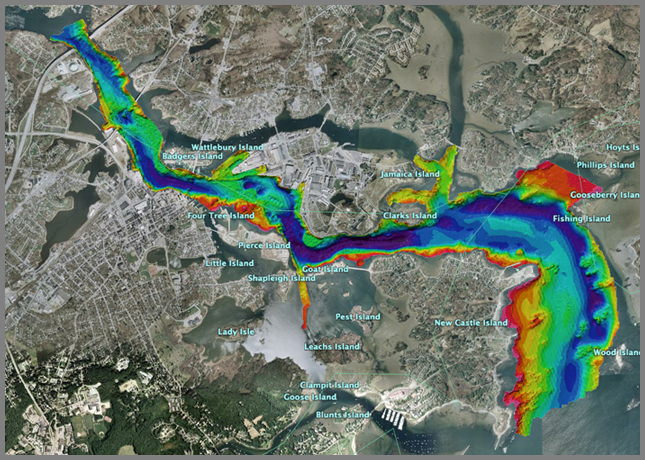
11.02.2006 12:43
Converting utm fledermaus sd file to geographic (ll)
[WARNING: this is not currently working right. I think I picked the wrong UTM zone for the regional dataset. This worked fine for the shallow water survey data, but again had aliasing issues.]
Yesterday, I tried to convert some fledermaus files to Google Earth as I wrote about a couple days ago. When I opened up the sd files, I realized that they are all UTM. I haven't ever tried to do UTM to Geographic conversions for Fledermaus before, so this is probably not the best/easiest route, but it works (other than some minor aliasing issues, that are probably my fault). Here is what I did (using a Mac of course).
First open dmagic and "open project". Choose the directory that has your UTM sd file. Then from file, "Import From SD/Scene".
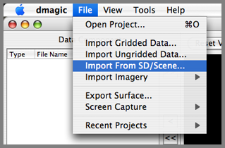
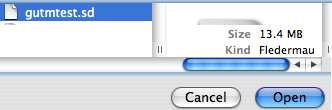
Bring all the dtm and geo into the display area.
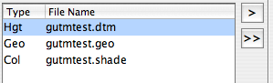
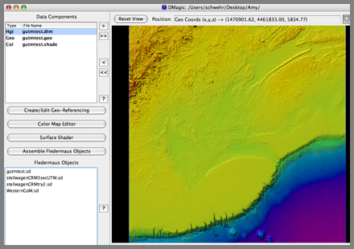
Now export the surface.
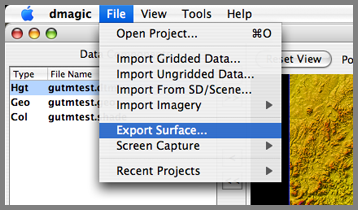
Make the file XYZ values.
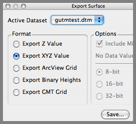
Save these as the sd file name, but replace sd with .xyz
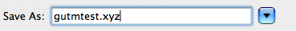
Now, we need to look up which UTM zone this data resides in. This are is off the coast of Massachusetts.
The data must be in zone 19, based on this map.
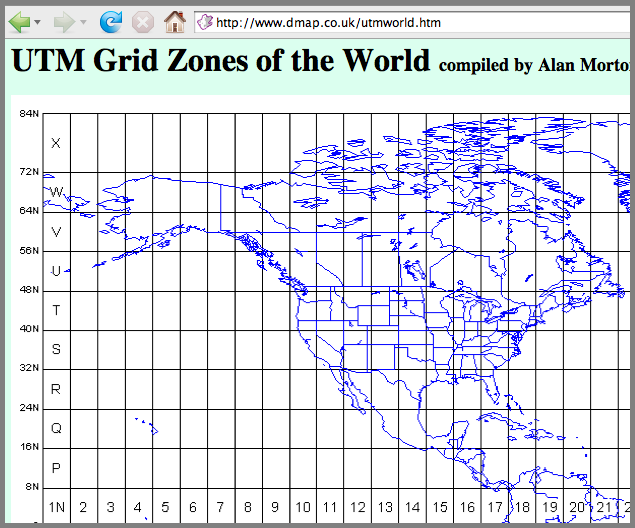
Now, convert the xyz UTM coordinates to Geographic (lon lat).
mv gutmtest.xyz gutmtest.xyz.utm19 invproj +proj=utm +zone=19 < gutmtest.xyz.utm19 > gutmtest.xyz.ll
This results in geographic coordinates in a form that can not be imported directly:
head gutmtest.xyz.llI wrote a small python script to parse the coordinates and make a decimal degree formatted file:
65d34'29.817"W 39d34'41.967"N 8544.00 65d34'10.096"W 39d34'41.385"N 8519.98 65d33'50.375"W 39d34'40.802"N 8508.90 65d33'30.654"W 39d34'40.217"N 8497.92 65d33'10.934"W 39d34'39.632"N 8477.91 65d32'51.213"W 39d34'39.046"N 8468.98
#!/usr/bin/env python import sysI then passed the data through this script:
def projCoord2decDeg(projStr): ''' >>> projCoord2decDeg('65d32\'11.773"W') -65.536603611111104 ''' deg,minutes,sec=0,0,0 deg,rest = projStr.split('d') deg = float(deg) if -1 != rest.find("'"): minutes,rest = rest.split("'") minutes = float(minutes) if -1 != rest.find('"'): sec = rest.split('"')[0] sec = float(sec) hemisphere=projStr.strip()[-1] # Assemble the decimal number result = deg + minutes/60. + sec/3600. if 'W'==hemisphere or 'S'==hemisphere: result = -result return result
if __name__=='__main__': for filename in sys.argv[1:]: for line in file(filename): lon,lat,z = line.split() print projCoord2decDeg(lon),projCoord2decDeg(lat),z
chmod +x proj_ll2decimal__ll.py ./proj_ll2decimal_ll.py gutmtest.xyz.ll > gutmtest.xyz.ll.decimalI then did "File - Import Ungridded data" in dmagic. That starts AveGrid. My first attempt after adding the file was with 0.001 degrees.
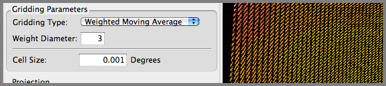
The results are not good. I need to make my cell size larger. I think I used 2.
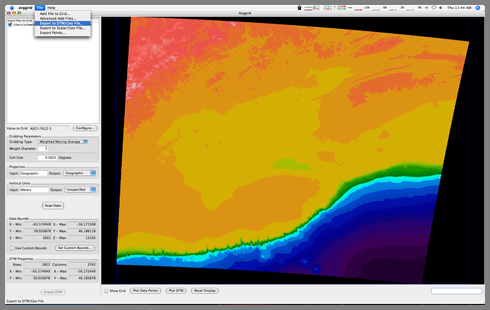
In AvgGrid, I did an export to DTM/Geo. When I put those two files into the view window of dmagic, I now see geographic coordinates.
I assembled a fledermaus sd file and ran it in fledermaus for decent results. However, you will see that there are some aliasing issues in the terrain. The striping is in the original UTM grid, so it is going to be difficult to remove without creating other problems.
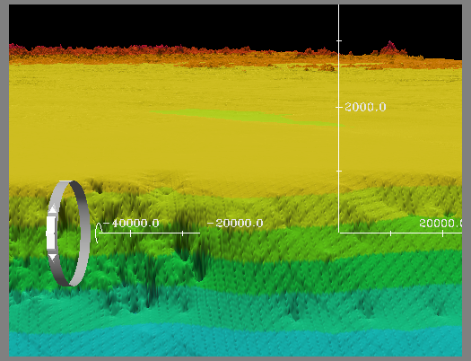
11.02.2006 09:31
Apple's X11 1.1.2
At first glace, it appears that Apple's update for X11 (1.1.2) solves
my crashing emacs X11 sessions from remote linux boxes! And there was
much rejoicing.
11.02.2006 08:54
Picture from GIS Day
I took some pictures in the morning as the first school kids came through, but
after that, I never got a free moment to get any more pictures.
Briana explains whale tagging and vocalizations.
Stephen and Briana strategize before the crowds decended on the booth.
The opening ceremony. There was no way to capture the whole crowd as people were everywhere throughout the atrium.
CCOM/JHC: GIS Day 06
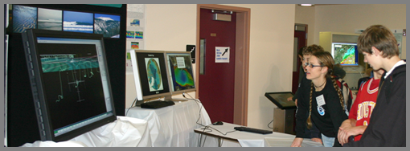
Briana explains whale tagging and vocalizations.
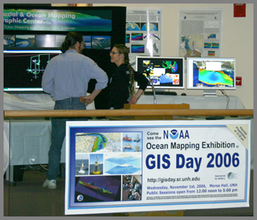
Stephen and Briana strategize before the crowds decended on the booth.
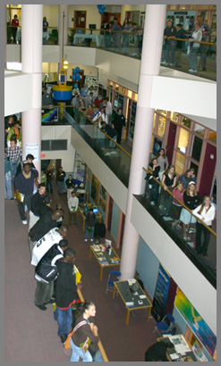
The opening ceremony. There was no way to capture the whole crowd as people were everywhere throughout the atrium.
CCOM/JHC: GIS Day 06
11.02.2006 08:40
UAV Cockpit Uses Game Peripherals for UAV Control
UAV Cockpit Uses Game Peripherals for UAV Control [wired]
Raytheon Announces Revolutionary New 'Cockpit' for Unmanned Aircraft - an Industry First [prenewswire.com
Universal Control System dramatically improves operator performance
FALLS CHURCH, Va., Oct. 31, 2006 /PRNewswire/ -- Raytheon Company
(NYSE: RTN) today unveiled the Universal Control System (UCS) -- a first of
its kind unmanned aerial system (UAS) "cockpit" that revolutionizes
operator awareness and efficiency, while providing the ability to control
multiple unmanned aircraft, reduce potential accidents, improve training,
and decrease costs. The announcement was made during today's Shephard UV
North America 2006 conference in Tysons Corner, Va.
"We took the best-of-breed technologies from the gaming industry and
coupled them with 35-years Raytheon UAS command and control expertise and
developed a state-of-the-art universal cockpit built around the operator,"
said Mark Bigham, business development director for Raytheon's Intelligence
and Information Systems business.
"We broke down the operator's tasks and objectives and constructed a
system built entirely around them, rather than building the system around
the air vehicle first, without input from the operators. Improvements
included adding a wrap-around display to enhance operator effectiveness. We
wanted to put the operator in the UAS 'cockpit' virtually and dramatically
enhance his or her situational awareness. UCS operators will have better
situational awareness than any manned platform, which dramatically improves
safety."
11.02.2006 08:07
Arctic navigation 'still not plausible'
I only get the fairplay headlines, but this sounded interesting.
Arctic navigation 'still not plausible' [fairplay]
THERE will be little trans-arctic navigation as a result of global warming, Dr Lawson Brigham of the US Arctic Research Commission told an IMarEST workshop this week.
11.02.2006 06:40
Apple's X11 update to 1.1.2
I have been talking a lot with people about how Apple has not updated
their X11 in a long time. This morning, I found out that they just
updated it.
This update addresses several issues in the X11 for Mac OS X package, enabling it to better handle:Not much detail, put when I update my next machine, I will make a list of files before and after to see what really has been changed.
GLX stereo visuals offscreen rendering to GLX Pbuffers and Pixmaps To tell X11 to take advantage of stereo visuals, enter:
$ defaults write com.apple.x11 enable_stereo -bool true
11.02.2006 04:16
Google Earth texture images with altitude
I got all excited about this new feature, but then I realized that
image will not be able to have an associated elevation model. Drat.
Still cool for clouds that can be flown under, but not as cool as I
had hoped.
New Google Earth 4b [gearthblog]
New Google Earth 4b [gearthblog]
A very important new feature is that image overlays can now have altitude. This means weather satellite photos and images can be placed above the ground. When you zoom in, the overlay will disappear allowing you to view the ground photos without interference. I really love the "Global Clouds" when you add altitude to it (edit the properties for the Global Cloud image overlay, select "Altitude" and move it up towards space)
11.01.2006 19:41
GIS day at UNH a big success
It felt like there were a ton of people today in Morse Hall for the
UNH GIS day. It was a big success for me. I met all kind of people
from both around campus and the general New England area and had good
discussions about topics including Fledermaus, WMS, mapserver, Google
Earth, AIS, and other technologies.
11.01.2006 05:23
Draw bridge stuck in down position
Bridge glitch blocks ships
PORTSMOUTH -- The Sarah Mildred Long Bridge may be closed indefinitely to vehicles starting at 10 o'clock this morning as crews attempt to lift the span with power from an emergency generator.
The bridge has been stuck in the down position since Saturday, preventing boats from traveling up the Piscataqua River. Heavy winds "fried" the bridge's electrical system, according to Department of Transportation spokesman Bill Boynton.
Boynton said crews working Sunday and Monday were unable to restore electricity to the underwater cable that controls the bridge's lift motor. He said they hope bringing in an emergency generator will supply the power needed to lift the bridge. ... If DOT crews are unable to lift the span today, vessels making deliveries to Sprague Energy, Sea-3 propane storage company and Irving Oil could also be affected, said Richard Holt of Portsmouth Pilots. ...
11.01.2006 05:19
UNH GIS Day is == TODAY ==
Come by the EOS building today at UNH for GIS day. I will be there
most of the day, but am off to teach a class from 12-2. CCOM will be
showing all sorts of spacial/temporal demos using GeoZui, Google
Earth, and web browsers.
11.01.2006 02:35
My first python class
Yesterday, I taught my first python class. Val and Michelle were good
enough to work through three hours of material (I did not know how
long it would take when I wrote it). They worked throught the
tutorial session with ipython running on their Mac laptops and
used subethaedit to collaboratively work on class notes. Everything seemed to work well accept these two notable points:

- The Decimal section was confusing
- By the time we reached the last 5 slides, we were all pretty used up. We skipped through the graphic and command line options stuff in about 10 minutes.